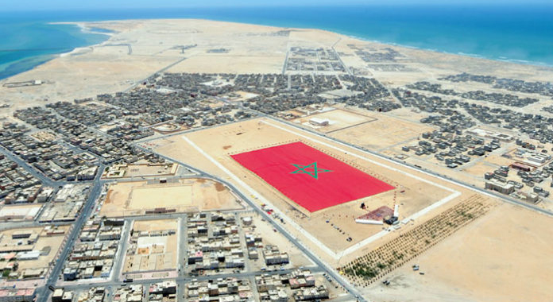

Dakhla
Dakhla
capital of the claimed

Dakhla (Arabic: الداخلة, Berber: Eddaxla / ⴷⴷⴰⵅⵍⴰ, Spanish: Dajla, Villa Cisneros) is a city in the disputed territory of Western Sahara,[2] currently occupied by Morocco.[3][4] It is the capital of the claimed Moroccan administrative region Dakhla-Oued Ed-Dahab. It has a population of 106,277[1] and is on a narrow peninsula of
the Atlantic Coast, the Río de Oro Peninsula, about 550 km (340 mi) south of Laayoune.
Reserve